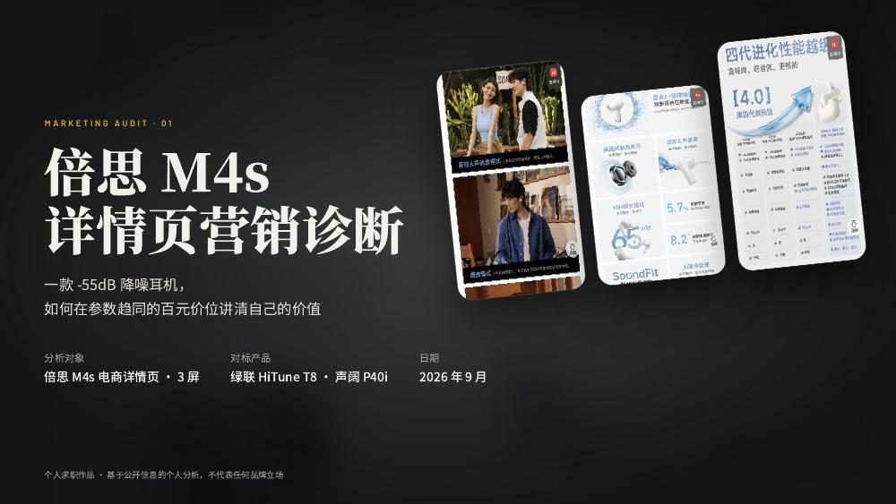
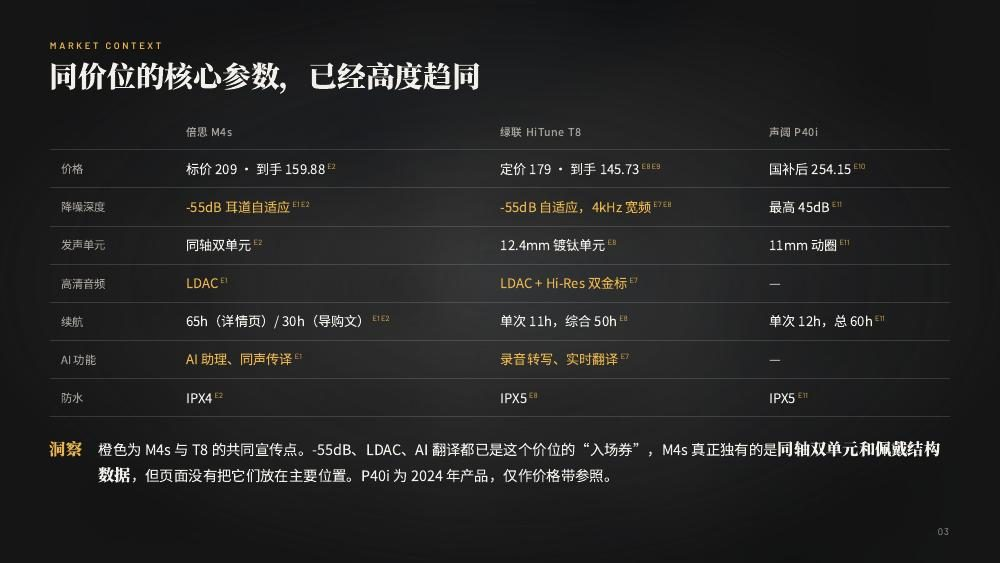
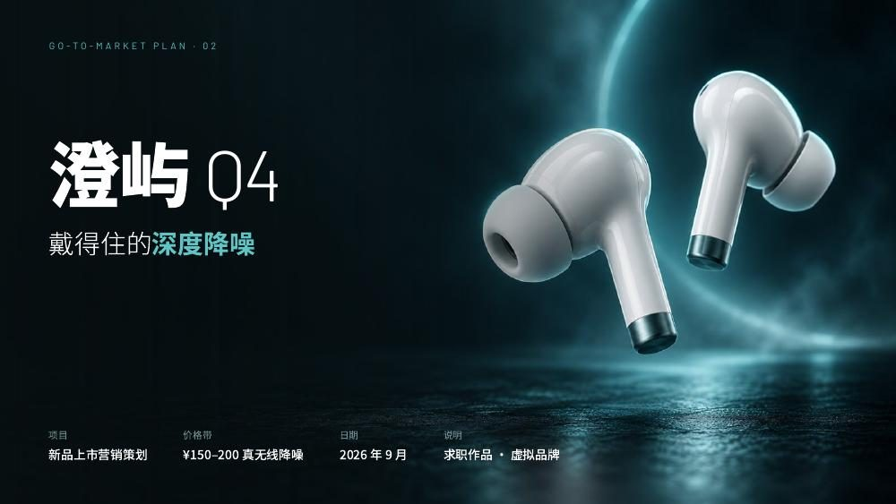
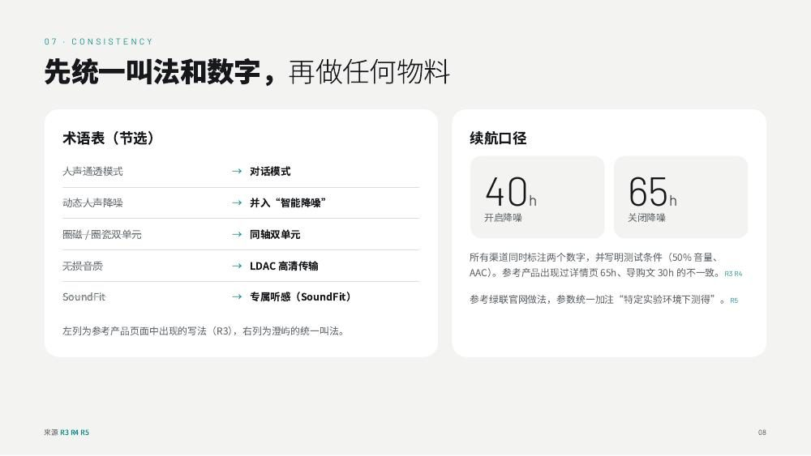
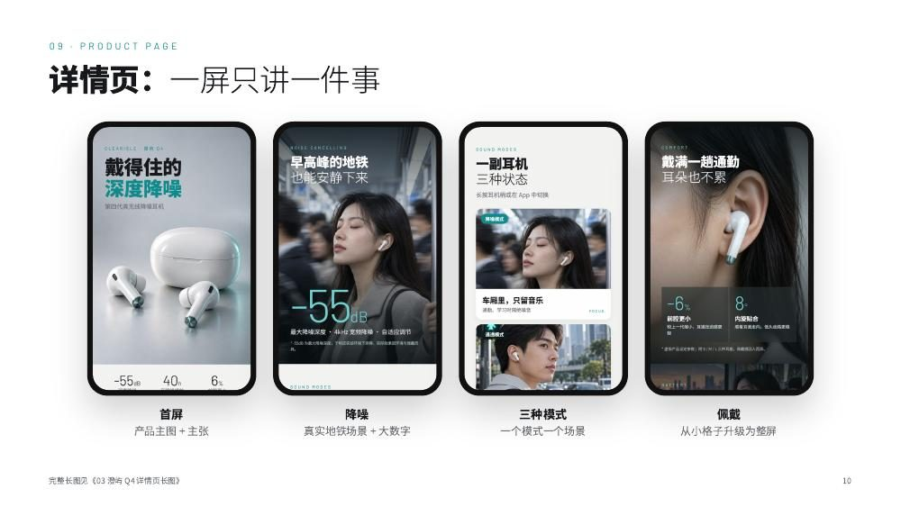
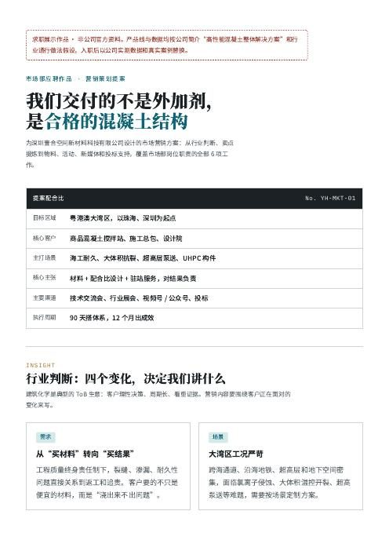

MARKETING · 营销策划
三份个人练习作品：先用公开资料拆解一款在售耳机的详情页，再用虚拟品牌做一套改进后的上市方案，最后尝试一个 ToB 建材企业的营销提案。每份都附有完整 PDF。
01 · 电商详情页诊断
对照绿联 HiTune T8、声阔 P40i 的公开参数与价格，发现 -55dB、LDAC、AI 翻译已经是同价位的共同宣传点，M4s 真正独有的同轴双单元和佩戴结构数据却放在次要位置。在 3 屏详情页截图上逐处标注问题，按严重程度分级并给出修改建议，所有结论附来源。


02 · 新品上市策划（虚拟品牌）
基于洛图科技市场数据与竞品研究，找到“大家都在比降噪深度，很少有人讲能戴多久”的空位，提出“戴得住的深度降噪”定位。把诊断中发现的问题逐条补上：三种声音模式各配真实场景，佩戴升级为整屏，续航同时标注开 / 关降噪两个口径。



03 · ToB 营销提案
面向建筑化学企业的市场部岗位练习。ToB 采购由多方共同决策，因此先梳理搅拌站、施工总包、设计院、业主、监理五类角色各自关心什么，再按“工程问题”组织产品线。
公司介绍取自招聘页面，产品线与数据为基于公开信息的假设。
